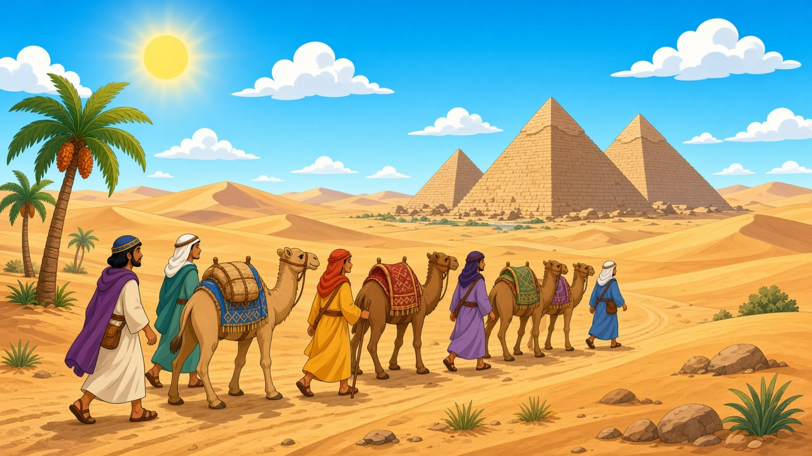
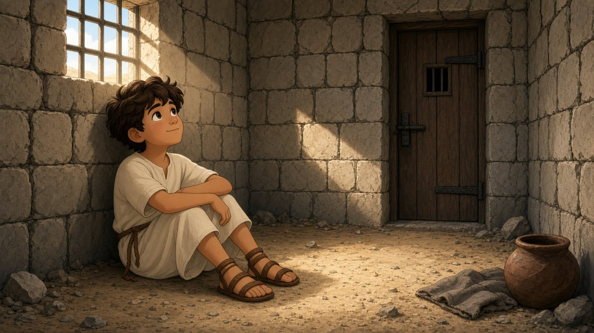
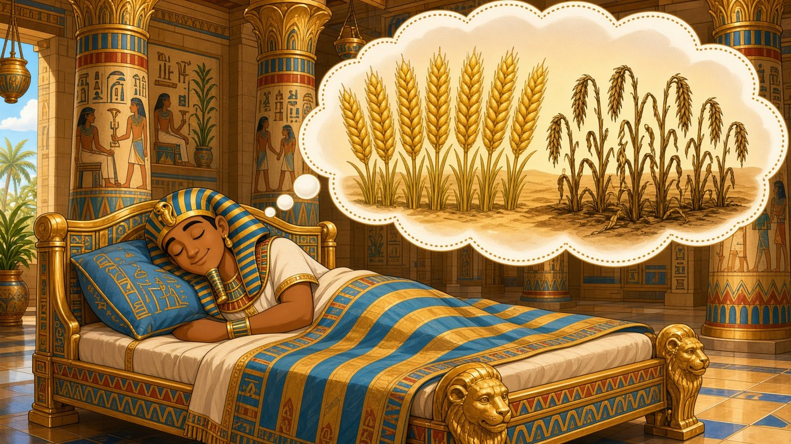
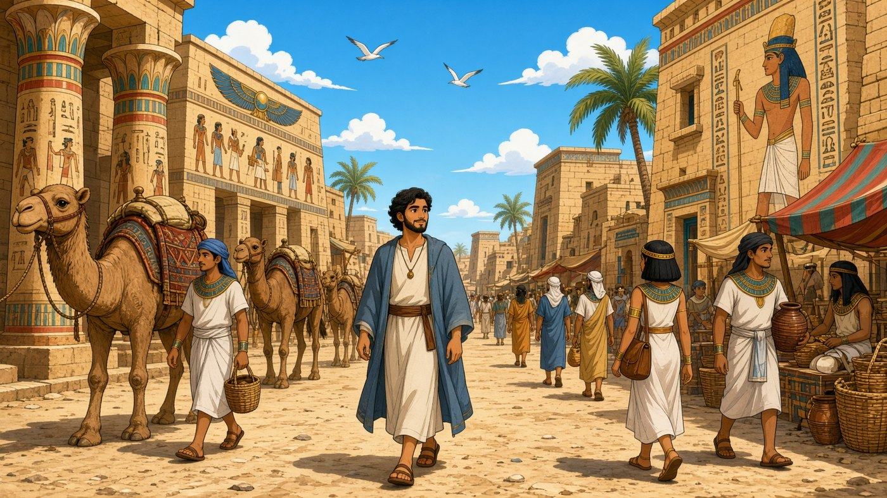
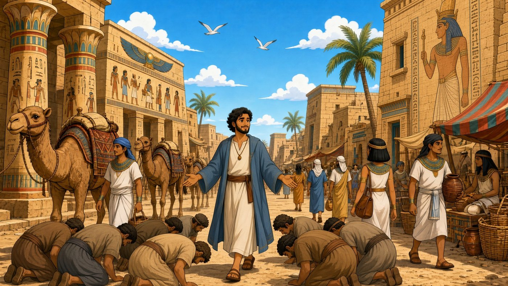
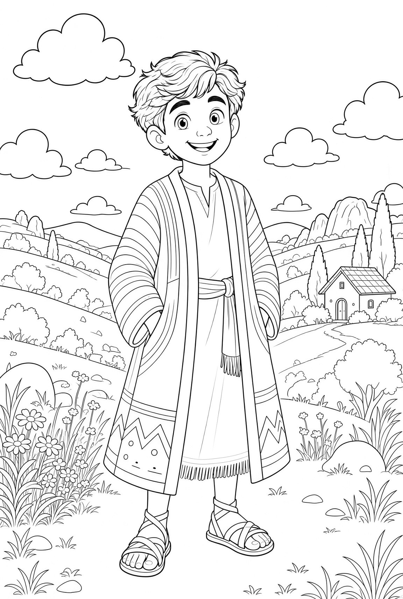

Joseph and His Coat of Many Colors
How God took care of Joseph, from a sad day to a happy ending.
A Very Special Coat
Long ago lived a man named Jacob. Jacob had twelve sons! One of his youngest sons was named Joseph.
Jacob loved Joseph very much. He gave Joseph a beautiful coat with many bright colors. Joseph's big brothers did not have a coat like that, and it made them grumpy.
Joseph's First Dream
One night Joseph had a dream. He and his brothers were tying up bundles of wheat in the field.
Joseph's bundle stood up tall, and all his brothers' bundles bowed down to it! When Joseph told his brothers, they were even more upset.
A Dream About the Sky
Then Joseph had another dream. This time the sun, the moon, and eleven stars all bowed down to him!
His brothers did not like this dream at all. But his father Jacob kept thinking about it and wondered what it meant.
A Hard Day for Joseph
One day Jacob sent Joseph to check on his brothers, who were taking care of the sheep far from home.
When the brothers saw him coming, they made a mean plan. They took away his special coat and put Joseph down into a deep, empty pit.

Off to Egypt
Soon some traders came by on their camels. The brothers pulled Joseph out of the pit and sold him to the traders.
The traders took Joseph far away to the land of Egypt. Joseph was alone, but he was not really alone. God was with him every step of the way.

God Was With Joseph
In Egypt, Joseph worked hard for an important man named Potiphar. Later Joseph was blamed for something he did not do, and he was put in prison.
That was not fair! But Joseph kept trusting God and kept doing what was right. Even in prison, God was with Joseph and helped him.

The King's Strange Dreams
One night Pharaoh, the king of Egypt, had dreams that nobody could explain. Then someone remembered Joseph!
God helped Joseph tell the king what the dreams meant: seven years with lots of food were coming, and then seven years with very little food.

Joseph Helps Everyone
The king put Joseph in charge of all of Egypt! Joseph saved up grain during the good years, so there would be food when the hungry years came.
When the food ran out back home, Joseph's brothers traveled to Egypt to buy some. They bowed down to Joseph, but they did not know who he was. His dreams had come true!

Joseph Forgives
At last Joseph said, “I am Joseph, your brother!” His brothers were scared, but Joseph hugged them and cried happy tears. He forgave them.
Joseph's whole family, even his father Jacob, came to live in Egypt, where there was plenty of food. God had turned a sad day into a happy ending.
What Did We Learn?
- Why were Joseph's brothers upset with him?
- How did Joseph feel when he was all alone in Egypt?
- Who was with Joseph the whole time?
- Joseph forgave his brothers. Is there someone you can forgive?

Color Joseph's Coat
Print this page and give Joseph's coat as many colors as you can! Red, yellow, blue, purple, green… you choose.
The PDF fits a regular 8½ × 11 sheet of paper, with the story title, Genesis 37:3, and a line for your name.
Or open the PDF in a new tab